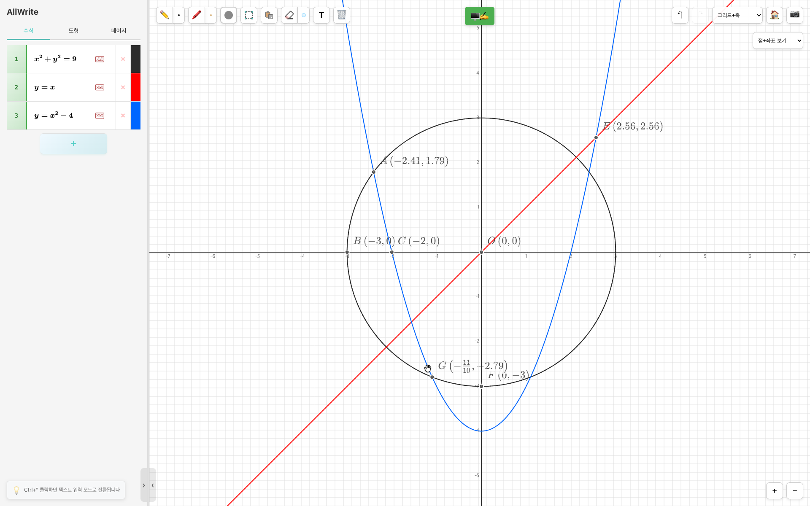
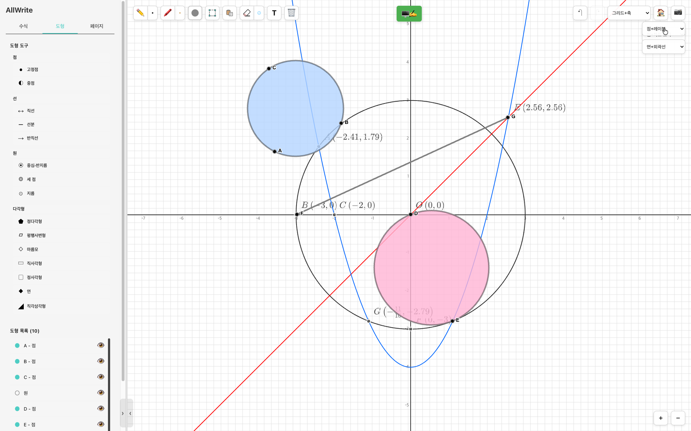
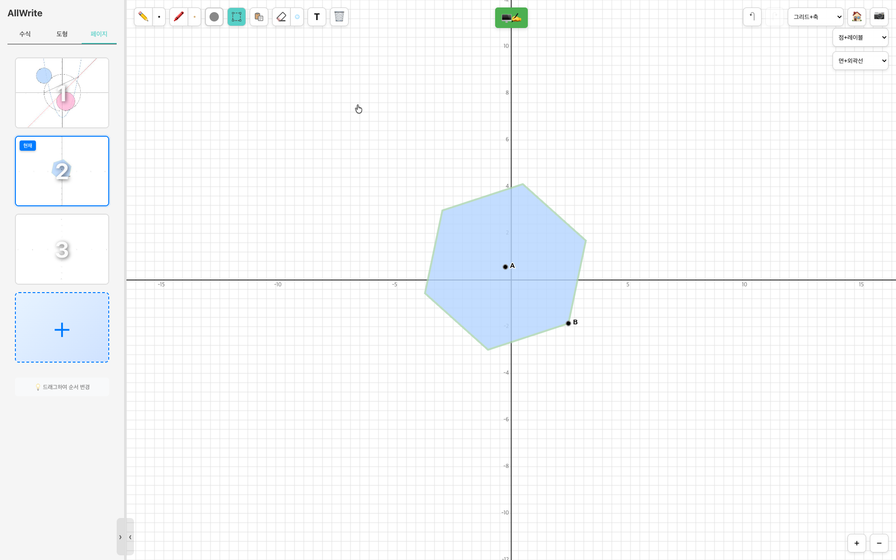
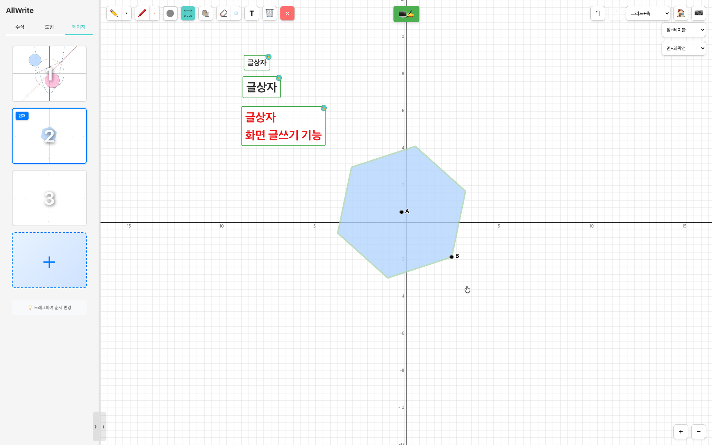
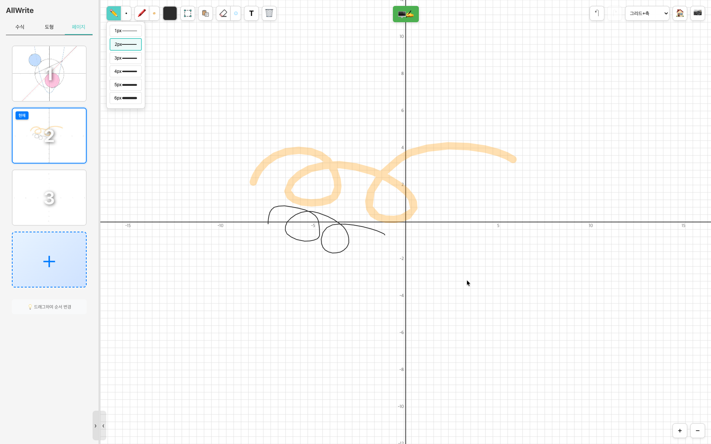
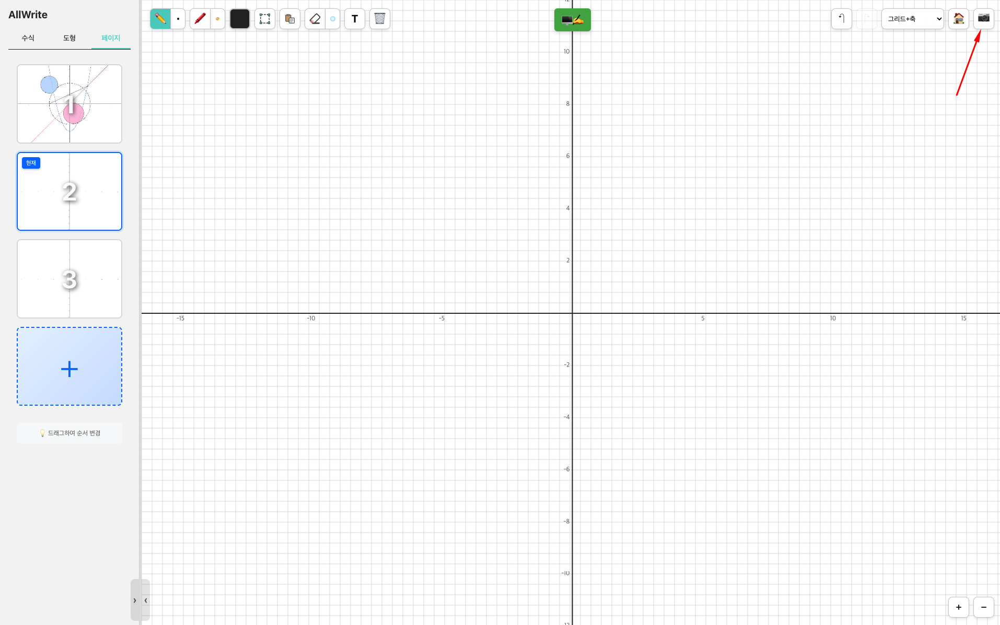
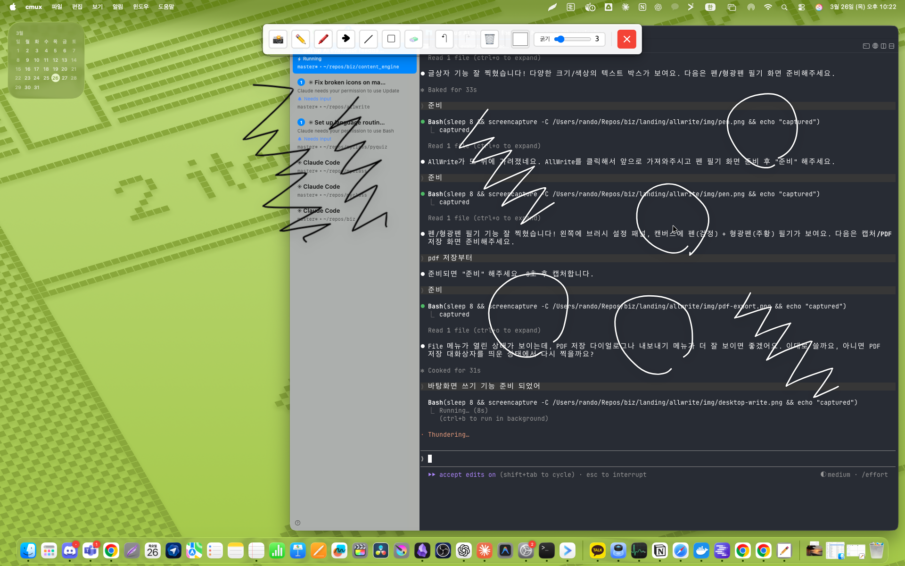

수식 입력 → 그래프 + 교점 자동 감지

기하학 도구 패널 + 도형 작도 & 채색

멀티 페이지 관리 + 정다각형 선택 & 변 수 설정

글상자 — 다양한 크기/색상 텍스트

펜 + 형광펜 자유 필기

화면 캡처 & PDF 내보내기

바탕화면 위에 직접 필기 — 투명 캔버스 모드
CORE
AllWrite의 핵심은 점과 도형의 완벽한 1:1 대응입니다. 선분의 끝점을 드래그하면 선분이 따라오고, 원의 중심을 드래그하면 원 전체가 이동합니다. 중점을 만들면 부모 점이 움직일 때 중점도 자동으로 재계산됩니다. 연결된 모든 도형이 실시간으로, 부드럽게, 동시에 변합니다.
각 도형이 어떤 점에 의존하는지 자동 추적. 점 하나가 변하면 연결된 모든 도형이 연쇄 업데이트.
변환이 즉각적이지만 끊기지 않습니다. 드래그하는 동안 모든 도형이 실시간 애니메이션으로 반응.
마름모는 항상 마름모, 직각삼각형은 항상 직각. 어떻게 드래그해도 기하학적 성질이 보존.
GEOMETRY
점 5종, 선 3종, 원 3종, 다각형 8종 이상. 모든 도형은 점으로 제어됩니다.
고정점, 슬라이더, 중점, 내분점(m:n 비율), 구속점(선/원 위)
선분, 반직선, 직선. 끝점 드래그로 실시간 변환.
중심-반지름, 지름, 세 점 원(외접원). 점 드래그로 크기/위치 조절.
정3~12각형, 직사각형, 정사각형, 평행사변형, 마름모, 연, 직각삼각형, 자유다각형
직사각형
대각선 끝점으로 정의. 어떻게 드래그해도 90° 유지.
마름모
대각선으로 정의. 네 변의 길이가 항상 같음.
직각삼각형
빗변 끝점으로 정의. 직각이 항상 유지됨.
GRAPHING
KaTeX로 아름답게 렌더링된 수식이 바로 그래프로 변환됩니다.
직교 좌표
y = f(x)
y = x², y = sin(x) 등. 자동 불연속점 감지.
매개변수
x(t), y(t)
x = cos(t), y = sin(t) 등 곡선 표현.
극좌표
r(θ)
나선, 장미 곡선 등. 자동 직교좌표 변환.
음함수
f(x, y) = 0
x² + y² = 1 같은 암묵적 곡선. Marching Squares 알고리즘.
부등식
y > f(x)
영역 채색으로 해 영역 시각화.
교점 자동 감지
교차점 표시
함수 간 교점, x/y 절편을 자동으로 찾아 표시.
CANVAS
기하학, 그래프, 필기, 텍스트를 하나의 공간에서. 멀티 페이지 프로젝트 지원.
펜
자연스러운 브러시 스트로크. Krita 스타일 손떨림 보정(4가지 모드). 색상/굵기 자유 조절.
형광펜
반투명 오버레이. 겹치면 색이 섞이는 Multiply 블렌딩.
지우개 & 텍스트
선택적 삭제, 텍스트 주석 추가. 기하학 도형은 건드리지 않음.
무한 캔버스
끝없이 확장. 스페이스바+드래그로 이동, 마우스 휠로 줌. 격자/좌표축 전환.
멀티 페이지
Ctrl+T로 새 페이지. 각 페이지마다 독립된 수식, 도형, 필기, 뷰 상태 유지.
선택 & 편집
클릭/사각형/올가미 선택. 복사/붙여넣기, Undo/Redo. 이미지 붙여넣기 지원.
COMPARISON
| AllWrite 2.0 | GeoGebra | Desmos | |
|---|---|---|---|
| 실시간 점-도형 동기화 | ✓ | 부분 | ✕ |
| 자유 필기 (펜/형광펜) | ✓ | 제한적 | ✕ |
| 오프라인 데스크톱 앱 | ✓ | ✓ | ✕ |
| 멀티 페이지 프로젝트 | ✓ | ✕ | ✕ |
| 손떨림 보정 (4모드) | ✓ | ✕ | ✕ |
| 완전 무료 / 오픈소스 | MIT | 부분 무료 | 무료 |
DOWNLOAD
설치 없이 웹에서 바로, 또는 데스크톱 앱 다운로드. 모두 무료.
🌐
설치 없이 브라우저에서 바로 사용. 모바일 터치 지원.
allwrite-production.up.railway.app
또는 데스크톱 앱 다운로드
MIT 라이선스 · 오픈소스 · GitHub에서 소스코드 보기